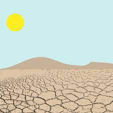

our recent posts

april 9,, 2021
UNDERSTANDING SOIL EROSION: CAUSES, EFFECTS, AND PREVENTION
When dirt is transferred from one location to another by wind or water....
read moreWelcome to our soil erosion website! We are a team of passionate individuals committed to raising awareness about the impact of soil erosion on our planet and promoting sustainable land use practices. Our goal is to educate people about the causes, effects, and prevention of soil erosion and empower them to take action to protect our soil resources.
We are dedicated to working with individuals, organizations, and policymakers to promote sustainable land use practices and protect our planet's valuable soil resources. Our team is constantly updating the website with the latest research and information on soil erosion, so be sure to check back often for new content.
Soil erosion is the process of loss of topsoil, which is the most fertile layer of soil, due to various natural and human-induced factors. It is a major problem in many parts of the world and can have significant negative impacts on agriculture, water quality, and the environment as a whole.
Water: Water is one of the biggest causes of soil erosion. Heavy rainfall, floods, and runoff can wash away the topsoil and leave the land barren.
Wind: Wind erosion occurs when the topsoil is blown away by strong winds. This is common in arid regions with low vegetation cover.
Deforestation: Trees and other plants hold the soil in place with their roots. When they are cut down, the soil becomes exposed and vulnerable to erosion.
Agricultural activities: Overgrazing, tilling, and planting crops on steep slopes can all contribute to soil erosion. These activities remove vegetation and disturb the soil, making it more susceptible to erosion.
Construction and development: When land is cleared for construction, the soil is often left bare and vulnerable to erosion. This can be exacerbated by heavy machinery and other construction activities.
Loss of fertile soil: Soil erosion removes the topsoil, which is the most fertile layer of the soil. This can lead to a decrease in crop yields, and in severe cases, the land may become unsuitable for agriculture.
Reduced water quality: Soil erosion can lead to sedimentation in streams, rivers, and other bodies of water. This can reduce water quality and harm aquatic ecosystems.
Increased flooding: Soil erosion can also increase the risk of flooding. When soil is eroded, it can create channels that allow water to flow more quickly and cause flash flooding.
Decreased biodiversity: Soil erosion can lead to the loss of plant and animal species that depend on a healthy soil ecosystem.
Economic impact: Soil erosion can have a significant economic impact on agriculture, forestry, and other industries that rely on healthy soil. It can also increase the cost of water treatment and infrastructure repair.
Planting vegetation, such as grasses or trees, can help prevent soil erosion by holding the soil in place with their roots.
read more>>we also provide information about ongoing research and development efforts related to soil erosion prevention and conservation through blogs. This could include information about new products, techniques, and technologies that are being.
read more>>We also provide educational resources and outreach programs to help raise awareness about the importance of soil conservation and the impact that soil erosion can have on the environment.
read more>>We also serve as an advocacy platform, working to raise awareness about the dangers of soil erosion and advocating for policy changes that promote soil conservation.
read more>>We also constantly take feedback from our website visitors and will take note and try to change our website and information for better.
read more>>We raise Donations to help the people who are facing the soil erosion problem currently and we also accepts donation from people all around the world
read more>>When dirt is transferred from one location to another by wind or water....
read more